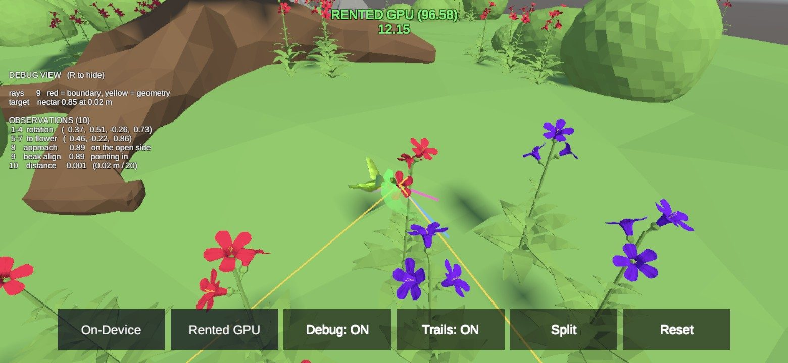
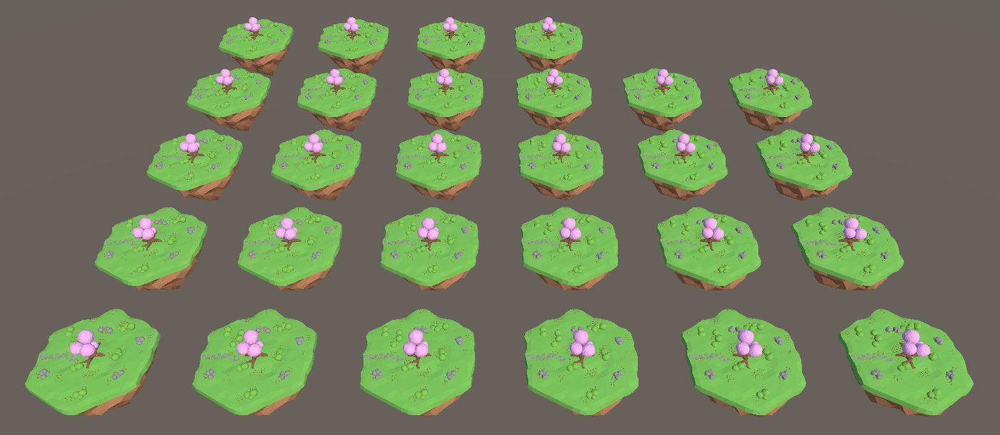

Hummingbird: a nectar-collecting agent
Trained an agent to fly through a 3D environment and feed from flowers using Proximal Policy Optimisation, then took the training run apart to find out why it was slow.
- Found two reasons the first run stopped at 41.29: it ran out of steps while its learning rate decayed to zero, and it saw one frame at a time, so it could not sense its own velocity. Stacking three frames and a ten times larger step budget raised mean reward to 96.58.
- Profiled the run and found 95.5% of wall-clock time was Unity physics on the CPU, so a bigger GPU would have bought almost nothing.
- Benchmarked process layouts on a 28-vCPU cloud instance: splitting 28 arenas across 7 processes instead of 1 tripled throughput.
- Exported the trained policy to ONNX. It runs inside Unity with no Python connection, in the Editor and on an Android phone.
| Built with | Unity 6, ML-Agents 4.1, PPO, Python, ONNX, Android |
|---|---|
| Mean reward |
Cloud L496.58
Laptop CPU41.29
|
| Throughput | 3.05× faster at the same arena count: 7 processes × 4 arenas reached 2,665 steps/sec where 1 process × 28 arenas managed 873. |